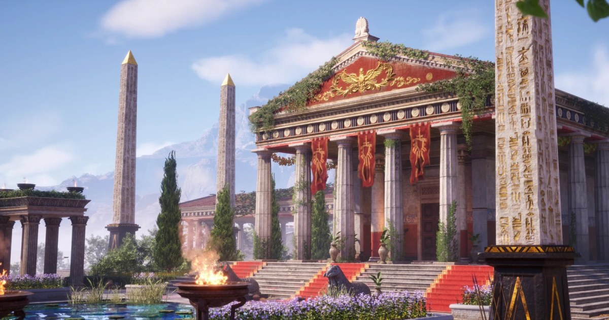

重建克麗奧佩脫拉神殿：模組建築、馬賽克材質與三種時段照明
Sungeun Moon 以《刺客教條：起源》的神殿為參考，拆分可重用建築、在 Substance 3D Designer 製作馬賽克，再於 Unreal Engine 調整日間、夕陽與夜景。

Unreal ★★★★★
完整分析
場景流程：先拆模組再安排紋理
作者先用方塊與圓柱建立空間，放入預設角色確認比例，再從遊戲截圖規劃柱體分件、可平鋪牆地面與飾條貼圖；常春藤也拆成可重用片段，配合建築形狀重新擺放。
製作控制：先驗證貼圖空間分配
飾條貼圖先用照片排出粗略配置，套到模型檢查裝飾細節是否清楚，再調整各區解析度；馬賽克以基本形狀搭配 SVG 建立圖案，Gradient Map 依灰階分配顏色。
驗證方法：分開比較直射光與陰影
作者在 Photoshop 取樣參考色彩，分別調整 Directional Light 與 Sky Light，並以大氣散射處理不同時段天空；後製主要統整色彩。作品歷時約六個月且在下班後製作，不能把工期當作全職製作基準。
BRIEF｜來源已驗證；證據深度較有限，完整分析會明確區分已知資訊與待驗證事項。